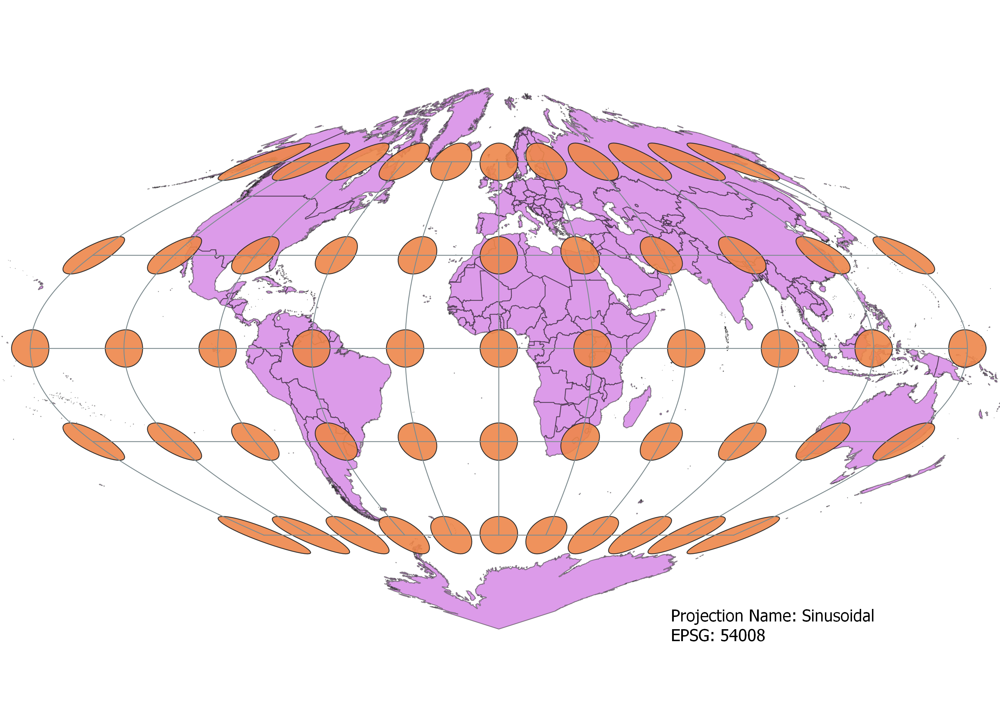

In this project I learned how to display images in different projections
By:Nate Kent
I created the following projections using the Qgis software by first downloading a natural earth vector image and downloading the "Indacatrix Mapper" plugin to add the distortion markers. For each seperate map, I used the same vector image while simply changing the map projection in the Qgis properties. After creating each map I then created a print layout for each one complete with a text box indicating the Projection name and EPSG indentification number. After converting each map projection to their respective PNGs, I inserted the images into the pre-prepared HTML code on Microsoft Visual Studio Code. After the code was complete, I created a sharable link for my own website with github desktop and completed my project.
WGS84 Projection
Using the WGS84 data, this map projects the earth onto a rectangle that distorts slightly in size and shape when moving towards the poles from the equator.

Aitoff Projection
This projection compromises both size and shape very slightly to create a picture that slightly distorts both factors whenever you move away from the central node, but these difference are very slight.

Psuedo Mercator
The most commonly seen on web-based map engines, this projection preserves shape perfectly, but consequentially increases the size of land masses near the poles by a factor of about 14.

Winkel Spherical Projection
This projection was created to minimize distortion between the 3 major factors of area, distance, and shape distortion to give a more clear conception of the world without one factor being completely compromised.
World Cylindrical Equal Area
This projection was created by projecting the globe onto a cylinder, therefore solving the problem of equal area, but losing quite a bit of accuracy when it comes to shape.

World Equidistant Conic
As the name implies, this is a conic map that preserves distance, slightly distorting size and shape as one moves down the prime meridian.
Azimuthal Equidistant
The most notable feature of this projection is that all points are an equal distant from the center point of the map (the north pole in this case), and can be useful when distance is an important factor.
Sinusoidal
This projection accurately preserves both distance and area, distorting as one moves away from the center of the map, especially the poles. It is mainly used to show the maps of continents like Africa because it is relatively central in the map, meaning that distortion will be at a minimum.

Stereographic
An ancient projection originally used for star charts, the Stereographic projection is technically infinite in area so is used to only look at one hemisphere at a time. It's relative accuracy within one hemisphere attracted cosmologists and mathamaticians to examine the cosmos through this old projection.
Data used for this project
Download Natrual Earth 1:10m Cultural Vector